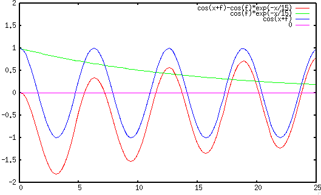
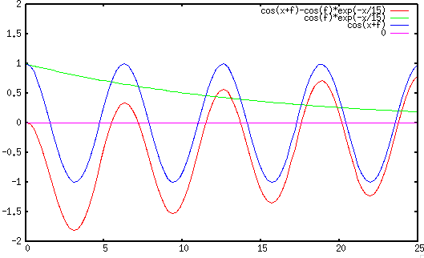
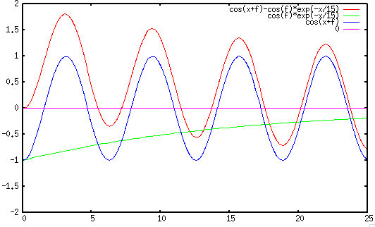
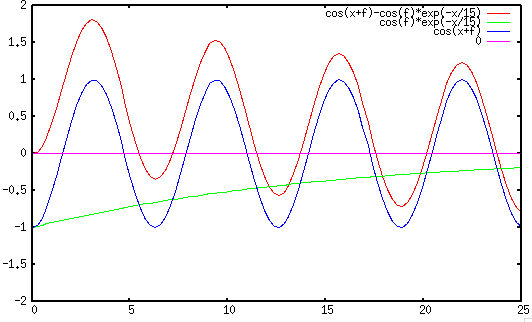
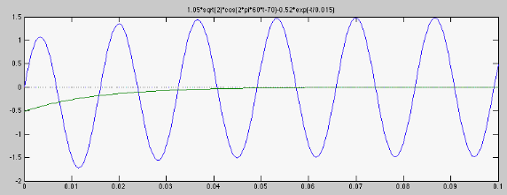

If the input voltage to the RC circuit considered previously is sinusoidal
, then the DE becomes
 |
(141) |
The homogeneous solution is the same as before
.
To find the particular solution  as the steady state response
to the input
, we first assume the input is
, and the particular solution is
as the steady state response
to the input
, we first assume the input is
, and the particular solution is
 and
. The DE can now be written as
Solving for
and
. The DE can now be written as
Solving for  we get
Substituting back into we get
where
. Taking the real part of the above
we get the particular solution as the response to the actual input
Alternatively, we can also use the phasor method. The input can be
written as
where
is the phasor form of the input voltage.
The voltage across
we get
Substituting back into we get
where
. Taking the real part of the above
we get the particular solution as the response to the actual input
Alternatively, we can also use the phasor method. The input can be
written as
where
is the phasor form of the input voltage.
The voltage across  is (voltage divider):
is (voltage divider):
|
 |
|
|
| |
|
|
(147) |
where
, and is the
frequency response function (FRF) of the system:
In time domain the steady state voltage is:
|
|
|
|
| |
|
|
(149) |
Note that this steady state output is simply the
input
 scaled by the magnitude of the FRF
scaled by the magnitude of the FRF
 with a phase shift equal to the
phase of the FRF
.
with a phase shift equal to the
phase of the FRF
.
The complete solution is then the sum of the homogeneous and particular
solutions:
From the initial condition
, we have
 |
(151) |
Solving for  we get
Substituting back to the expression of
we get
Substituting back to the expression of  , we get
The same result can also be obtained using the
Laplace transform method.
, we get
The same result can also be obtained using the
Laplace transform method.
Again we consider a short-cut method, by generalizing the result above to
in terms of three essential components
- : the initial value (same as before);
-
: the steady state response, and
is
evaluated
at
 ;
;
 : the time constant of the system (same as before).
: the time constant of the system (same as before).
Note that when the input  is a constant, the steady state response
is a constant, the steady state response
 is a constant, but when the input
is sinusoidal, the steady state response
is a function of
time , but its evaluation at
is still a constant. We see that the complete response is composed of
the steady state response and the exponential decay of the difference
between the initial value and the steady state response evaluated
at .
is a constant, but when the input
is sinusoidal, the steady state response
is a function of
time , but its evaluation at
is still a constant. We see that the complete response is composed of
the steady state response and the exponential decay of the difference
between the initial value and the steady state response evaluated
at .
If the initial voltage on is zero  , then
, then
Note that the initial magnitude of the transient component at
varies depending on the angle .
- If
, then
, and the
transient component disappears altogether.
- If
or
 , then
,
i.e., the magnitude of the transient component reaches maximum (either
positive or negative), and if value is large and therefore the
transient component decays slowly, the magnitude of the initial voltage
could be close to three times the peak of the steady state.
, then
,
i.e., the magnitude of the transient component reaches maximum (either
positive or negative), and if value is large and therefore the
transient component decays slowly, the magnitude of the initial voltage
could be close to three times the peak of the steady state.
- In all other cases, the amplitude of the transient component is
between 0 in the first case and the maximum value in the second case.
The three cases for to be  ,
,  , and
are shown below:
, and
are shown below:
 

 

Example 2:
An electromagnet, modeled by a resistor
and ,
is powered by sinusoidal voltage of and . Find the current
through the circuit when the switch is closed at when the phase
angle happens to be
, i.e.,
.
- Find initial value:
 .
.
- Find impedance of circuit:
- Find steady state value
by phasor method:
- Find time constant
.
- Find current
